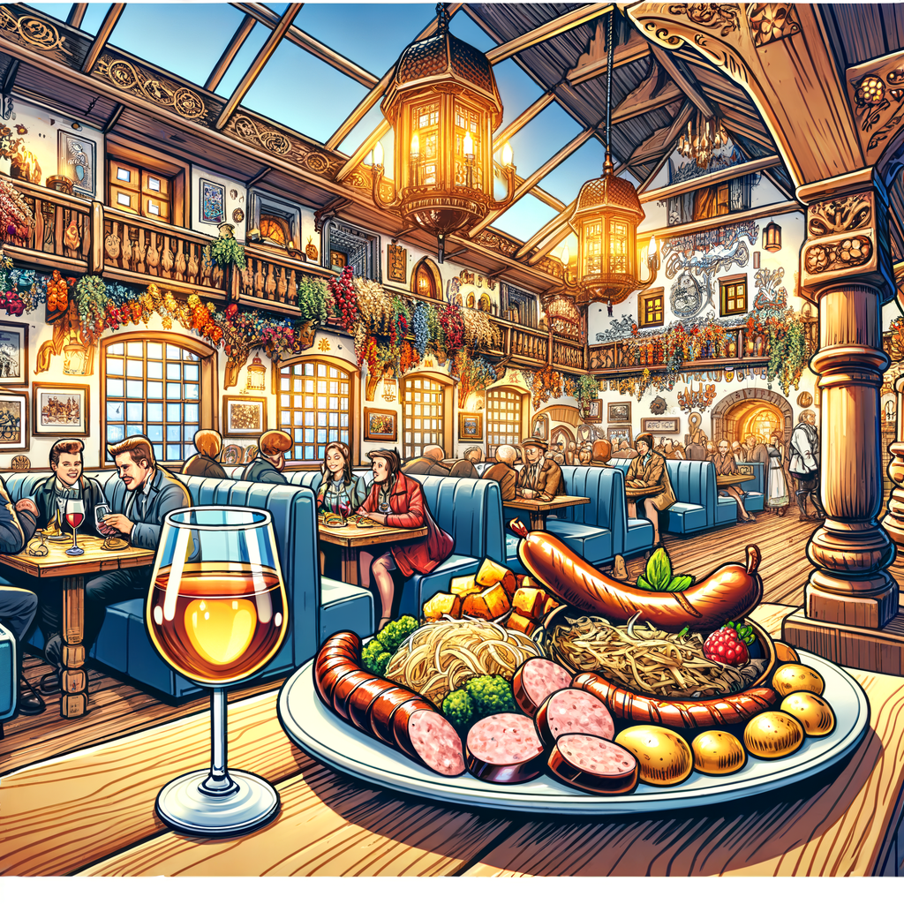
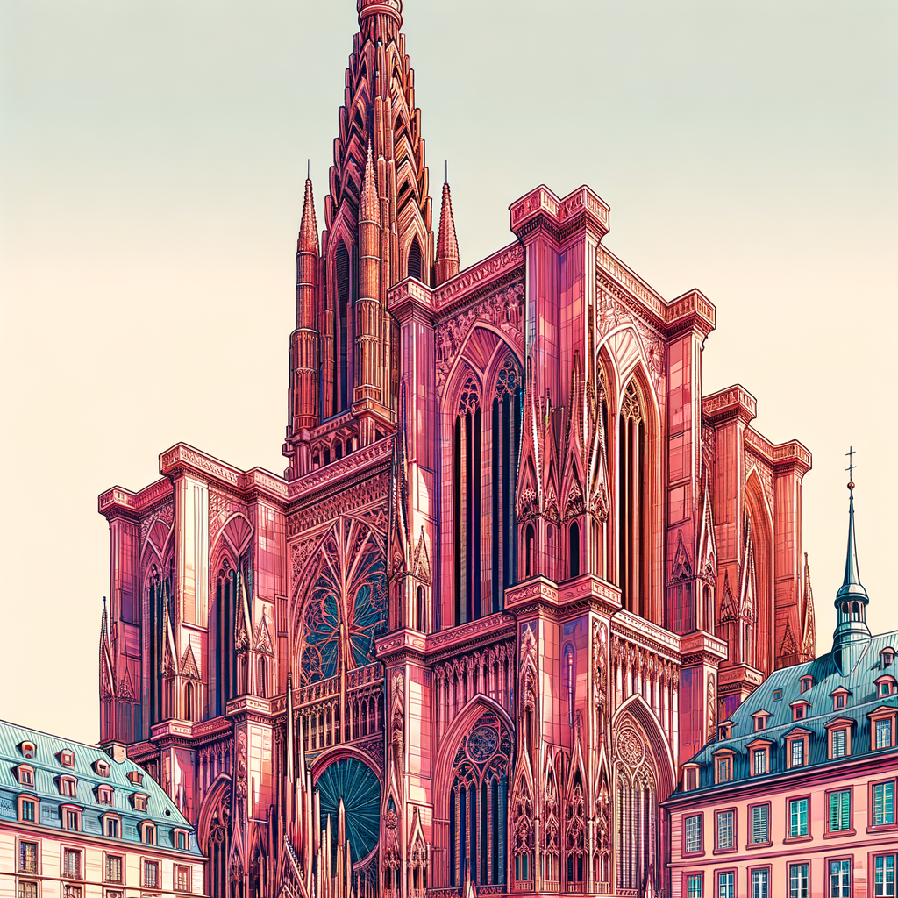
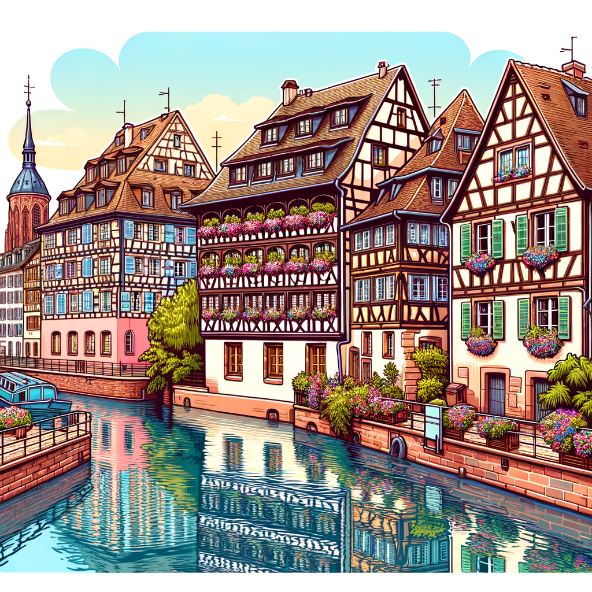
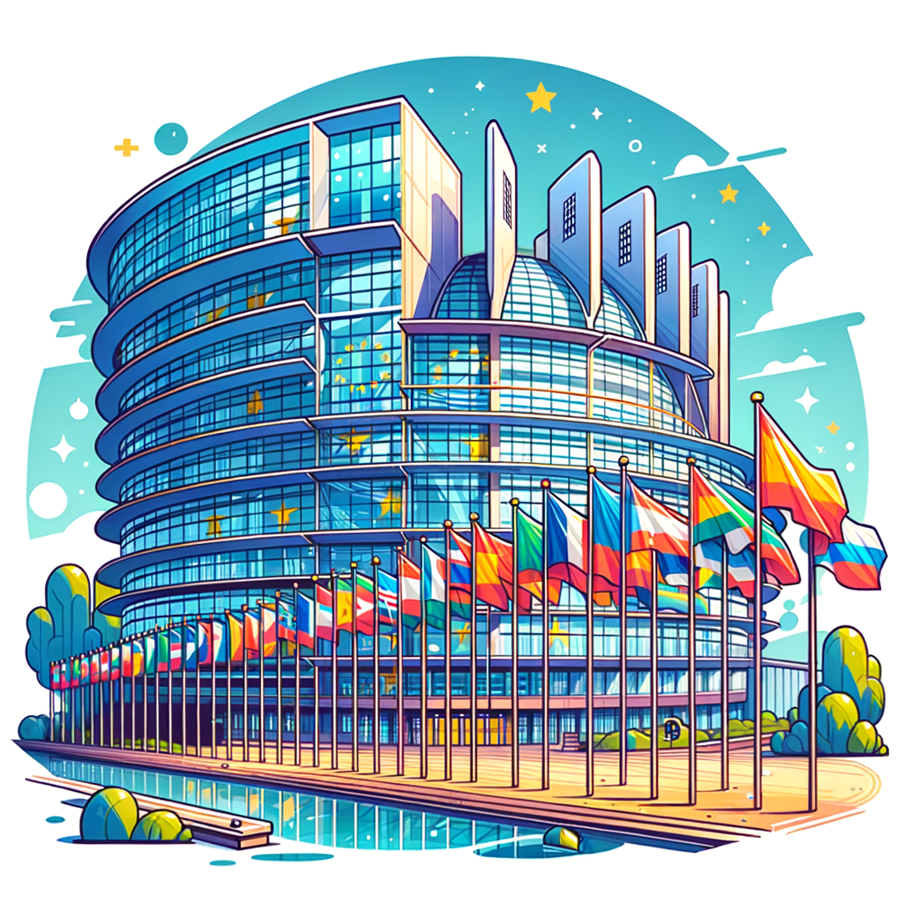
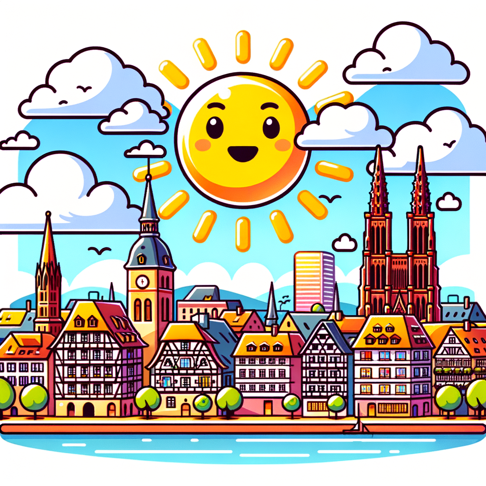

Infos pratiques
Tout pour preparer votre venue au Congres de la Saucisse 2026.
 Plan du quartier
Plan du quartier
Palais des Congres, hotels, gare et restaurants a proximite.
 Venir a Strasbourg
Venir a Strasbourg
TGV
Paris Gare de l'Est → Strasbourg : 1h46
Depuis la gare, prendre le Tram C direction Neuhof puis Tram B jusqu'a l'arret Wacken (20 min).
Ou taxi (15 min, ~15 euros).
Avion
Aeroport Strasbourg-Entzheim (SXB)
Navette train en 9 minutes vers Strasbourg Gare Centrale.
Vols directs : Paris, Lyon, Marseille, Toulouse, Nice, Londres, Amsterdam.
Voiture
A4 depuis Paris (450 km, 4h30)
A35 depuis Lyon (490 km, 4h45)
Parking Wacken a 100m du Palais (800 places, 12 euros/jour).
Tram
Lignes B et E, arret Wacken — directement devant le Palais des Congres.
Ticket : 1,80 euro. Pass 3 jours : 9,90 euros.

Guide gourmand — Ou mangerVous etes au Congres de la Saucisse ? Voici les meilleures adresses pour prolonger le plaisir.
Maison Kammerzell
Cuisine alsacienne dans un batiment du XVe siecle. Knack, choucroute garnie, cervelas. Place de la Cathedrale.
Chez Yvonne
Institution strasbourgeoise. Saucisses grillees, fleischnacka, choucroute royale. 10 Rue du Sanglier.
Au Pont Corbeau
Cervelas vinaigrette, fleischnacka, tarte flambee. Vue sur l'Ill. 21 Quai Saint-Nicolas.
Le Tire-Bouchon
Flammekueche a volonte le soir. Knack geante, presskopf. 5 Rue des Tailleurs de Pierre.
La Corde a Linge
Les meilleures flammekueche de Strasbourg, declinaisons originales. 2 Place Benjamin Zix, Petite France.
Brasserie Meteor
La brasserie partenaire du congres ! Bieres et saucisses artisanales. Hochfelden (20 min en voiture).

Decouvrir StrasbourgCathedrale Notre-Dame
Chef-d'oeuvre gothique, 142m de haut. Horloge astronomique et plateforme panoramique.

Petite France
Quartier pittoresque, maisons a colombages, canaux. Le coeur historique de Strasbourg.

Parlement Europeen
A 500m du Palais des Congres. Visites guidees gratuites sur reservation.
Bateau sur l'Ill
Croisiere de 70 min a travers la ville. Depart tous les 30 min depuis le Palais Rohan.
Route des Vins
A 30 min en voiture. Riquewihr, Colmar, Eguisheim. Riesling, Gewurztraminer.

Meteo en juinEn juin a Strasbourg :
- 🌡️ Temperature moyenne : 20-25°C
- ☀️ Ensoleillement : 16h de jour
- 🌧️ Precipitations : moderees (prevoir un parapluie)
- 👔 Tenue : decontractee, veste legere pour le soir